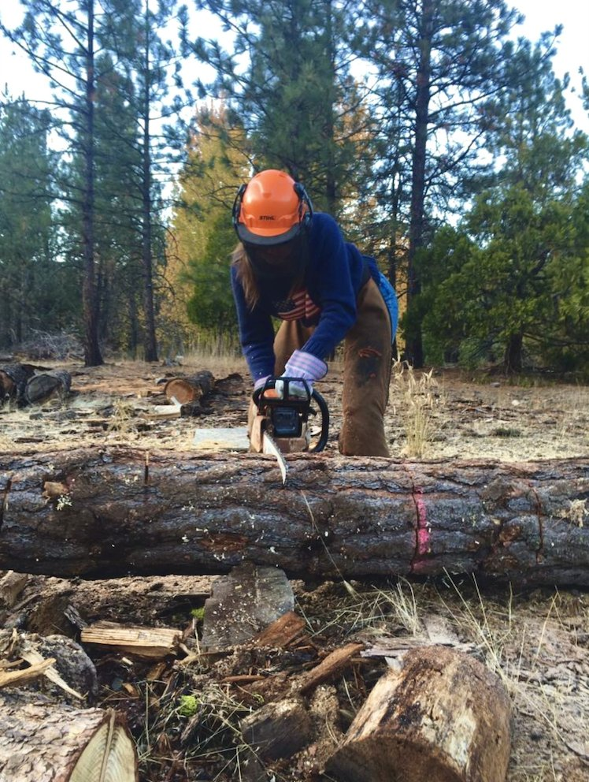
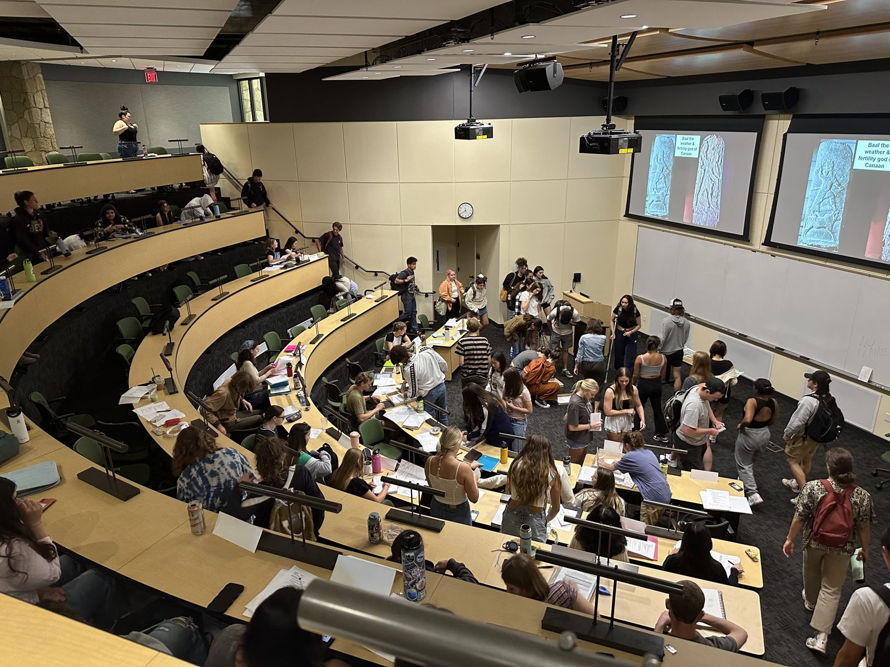
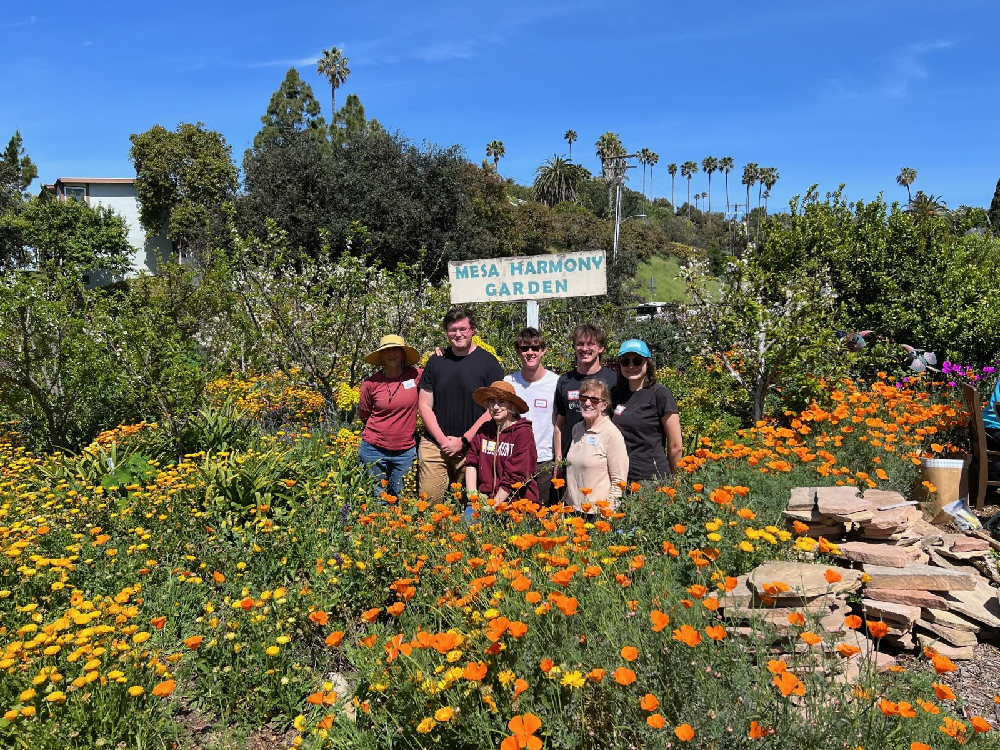
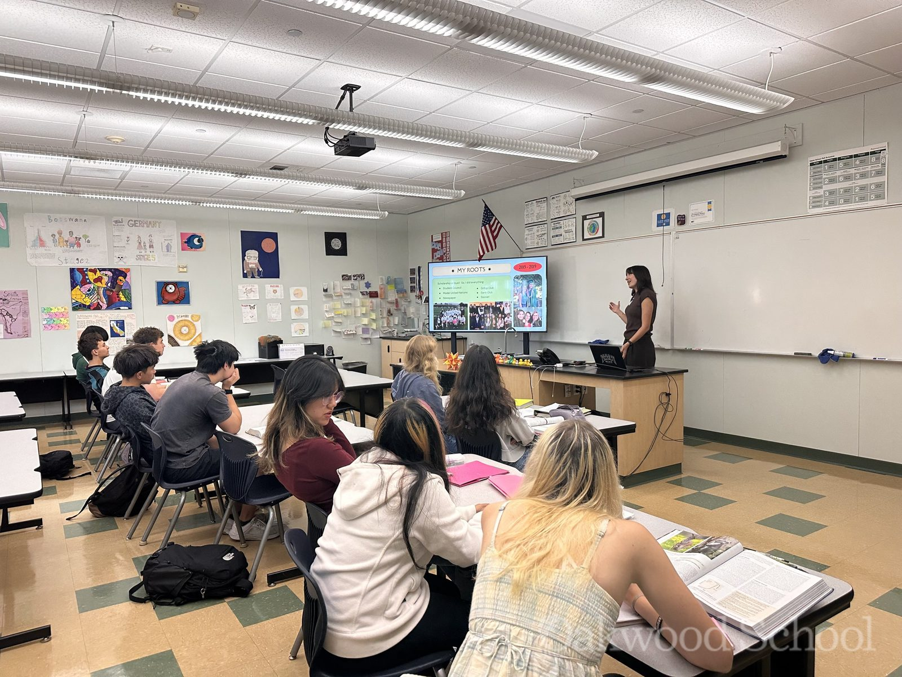

How I got here
-
2020
Learning to read a landscape
My first fieldwork was as a biological monitoring volunteer for the Bureau of Land Management in Oregon's Cascade-Siskiyou National Monument, studying how previously clear-cut forests were recovering under different restoration strategies. I also volunteered with the Vesper Meadow Education Program implementing basket willow amendments at a wetland restoration project. While living in the area, I began to see the landscape as a complex system of interconnected processes.

Forest work in southern Oregon, 2020 -
2021–2023
Two majors and a classroom
At Westmont College I double-majored in Environmental Studies and Religious Studies, graduated magna cum laude from the Honors Program, and worked as a teaching assistant and tutor for Old Testament.

Westmont College -
2021–2023
Thinking in space
Alongside school I earned a Permaculture Design Certificate and volunteered at Mesa Harmony Garden on the Santa Barbara Mesa. I started assessing properties for clients and redesigned one recovering from the Thomas Fire to protect it from future fire and erosion. It was my first taste of spatial reasoning.

Mesa Harmony Garden, Santa Barbara -
2022
My first GIS project
As a natural resources management intern with Santa Clara County Parks, I led a conservation study of California milkweed on public lands, mapped populations with ArcGIS Field Maps, and helped CAL FIRE with prescribed burns.

Milkweed study sites, Santa Clara County Parks -
2024–2025
On the water
At Cachuma Lake I coordinated the aquatic invasive species mitigation program for Santa Barbara County Parks: plankton tow sampling, substrate sampling, boat inspections and decontamination, plus education events for the public.

Aquatic invasive species program, Cachuma Lake -
2025
Back to school, deeper into GIS
At Cal Poly SLO, I pursued a Master's degree in Environmental Science and Management with my advisor, Dr. Yiwen Chiu. What began as a Water Footprint Assessment project evolved as I discovered the complications in quantifying agricultural water use. My coursework focused primarily on GIS and applied water science. In one Applied GIS class, I worked with a team of undergraduate students on a consulting project at Bartleson Ranch using survey-grade GPS and ArcGIS Pro.

RTK utility mapping, Bartleson Ranch -
2026
Groundwater, up close
As a groundwater management intern at Valley Water, I checked well data, logged PFAS soil cores, sampled recharge ponds and domestic wells, and built StoryMaps on seawater intrusion, sea-level rise and land subsidence.

Recharge-pond sampling, Valley Water -
Now
Research and teaching
I'm finishing my thesis on whether a satellite-based machine learning model can stand in for weather stations when estimating evapotranspiration across California. I'm also a GIS Developer building Cal Poly's open-source intro GIS course site, and an instructional student assistant in introductory environmental science.

Oakwood, 2026